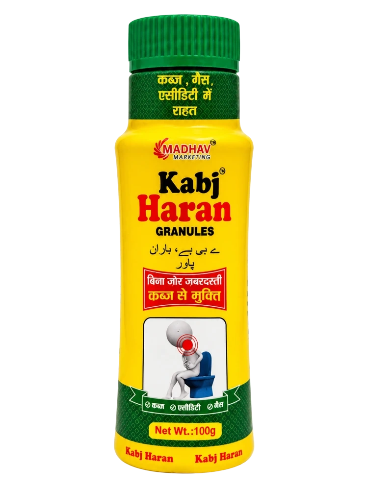

100 g granulesDigestive wellbeing
Kabj Haran Granules
Traditionally used for occasional constipation and digestive discomfort such as gas and acidity, as described on the pack. Follow the label directions and seek medical advice before prolonged use.